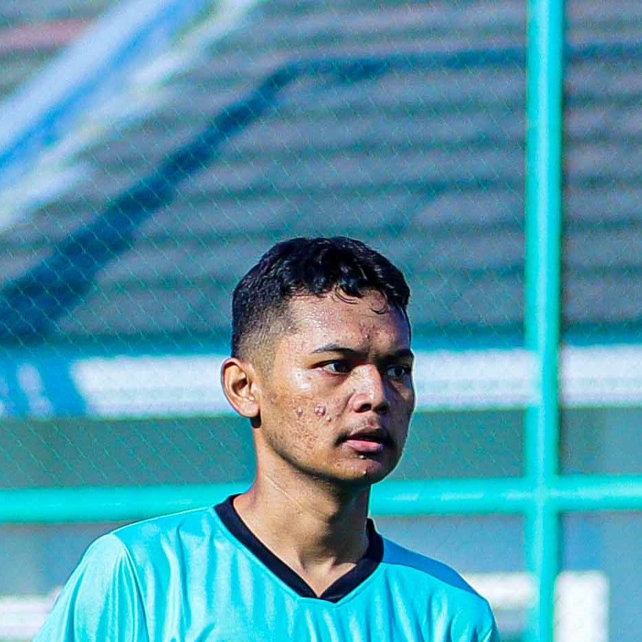

About Me

Name: Ahmad Bagus Setiawan
NIM: 2023010003
Institution: Politeknik Balekambang Jepara
I am a software development student with a passion for creating engaging and interactive websites. This project is a guide for eFootball enthusiasts, providing helpful tips and strategies for players.